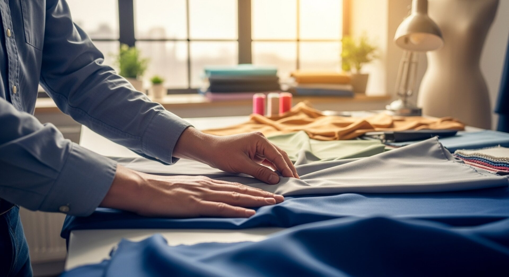

<!-- Responsive image implementation for fashion-ai-vs-generic -->
<picture>
    <!-- Modern formats for supported browsers -->
    <source media="(min-width: 1024px)" srcset="fashion-ai-vs-generic.avif" type="image/avif">
    <source media="(min-width: 768px)" srcset="fashion-ai-vs-generic-tablet.avif" type="image/avif">
    <source media="(max-width: 767px)" srcset="fashion-ai-vs-generic-mobile.avif" type="image/avif">
    <source media="(min-width: 1024px)" srcset="fashion-ai-vs-generic.webp" type="image/webp">
    <source media="(min-width: 768px)" srcset="fashion-ai-vs-generic-tablet.webp" type="image/webp">
    <source media="(max-width: 767px)" srcset="fashion-ai-vs-generic-mobile.webp" type="image/webp">
    
    <!-- Fallback JPEG versions -->
    <source media="(min-width: 1024px)" srcset="fashion-ai-vs-generic.jpg" type="image/jpeg">
    <source media="(min-width: 768px)" srcset="fashion-ai-vs-generic-tablet.jpg" type="image/jpeg">
    <source media="(max-width: 767px)" srcset="fashion-ai-vs-generic-mobile.jpg" type="image/jpeg">
    
    <!-- Default image -->
    
</picture>
